In an extreme world where weather is constantly changing and hazardous, you have to survive with anyting you can find. You can catch a cold even in light rain, better make an umbrella to keep you safe. The snow could freeze you to death, make sure to gather up some wood for campfire and shovel up you base.
This project was made for the Artificial Intelligence module, where my main focus was adaptive difficulty. However, I would also like to showcase my mechanics.
How the adaptive difficulty works in this game is by weighing chances of hazard occurrence. The more likely you are to survive a hazard, the more likely it is to be generated.
Some weathers, like clear skies and rain, have a set weight as they are not likely to kill you, so they have a higher chance to appear as a break for the player, and chances don't need to be weighed as you can survive them normally.
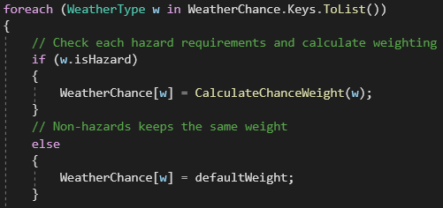Chance weight calculation is slightly complex. It takes in a multitude of values to determine a fair opportunity for the player. First of which is the counter for the hazards: the tools at your disposal.
Each hazard has some counterable tools, for example, you can survive well through an acid rain with an umbrella. The weight is a ratio of what you have versus what you need. If you have all the counterable tools crafted for a hazard, the hazard would be very likely to happen.
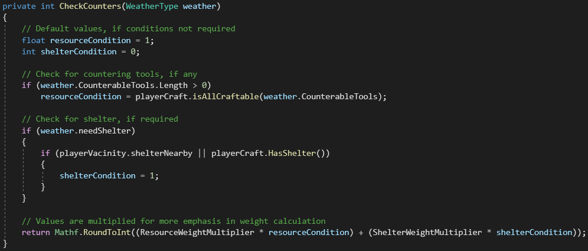On top of that, some hazards may require a shelter. Shelters could also be crafted, but we would also need to check the player's vacinity to see if a shelter is already available.
Below you can see a snowstorm generated. This is due to the player having campfire and shovel available to them, two of the main counters towards snowy weathers. On the top-right you can also see a list of weights for each weather. Snow hazards are more likely than rain hazards because of the lack of umbrellas.
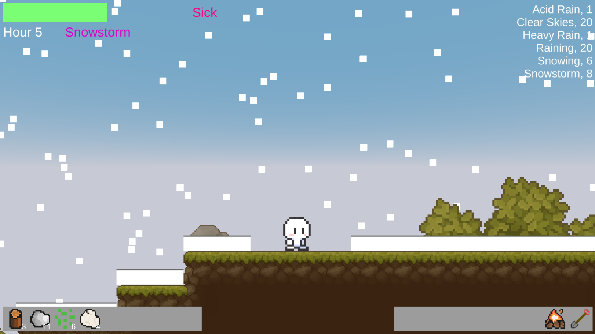A possible exploit of this however, is lowering the chances of a hazard by intentionally not making tools, therefore the game would think you don't have the protection needed. This is resolved by checking your materials invenotry as well, and calculating the ratio of materials you have versus the materials needed to craft all the counterable tools.
screencap isAllCraftable
As you can see below, no tools are crafted so far, but the player has collected a lot of wood. Since wood allows you to craft campfire and shelter, the chances of snow hazards have increased.
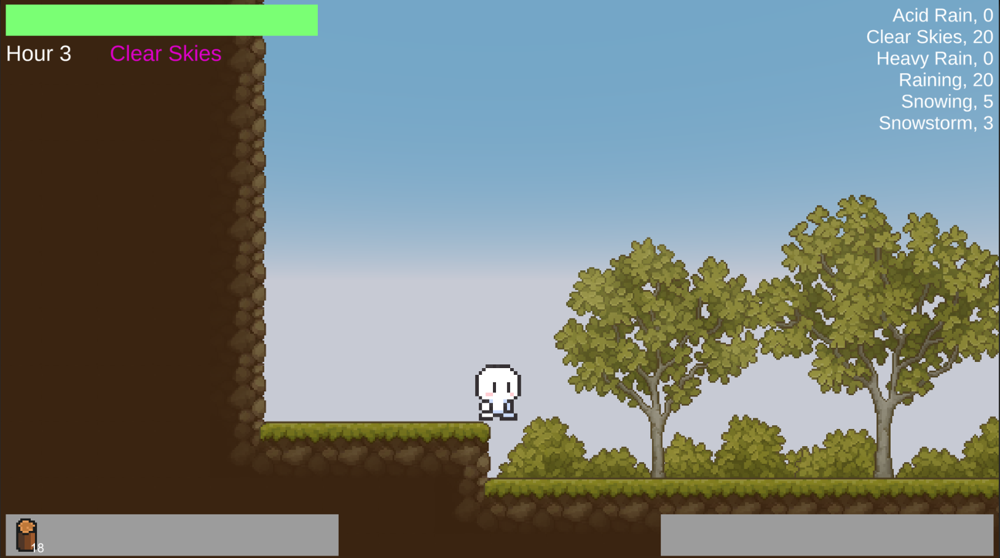The next weight utilizes a formula called the Upper Confidence Bound. What this formula does is take into account events that happened before to determining the best solution. This was included so that hazards that the player has died to could have a higher chance of appearing, to give a better challenge.
This formula is split into two parts: the exploitation value; and the exploration value. The exploitation is a simple ratio of wins versus ocurrences. In this game, it's the number of times you died to a hazard against the number of times the hazard has occurred. The exploitation value more complex to calculate, but basically it revolves around how many times a solution has been tried, or how many times it has been 'explored', and in this project's case, the number of times a specified hazard has occurred is compared with the total number of times any hazards have generated.
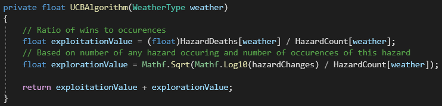The last two factors to consider are more simple and conventional: time and death. Taking time into account allows more hazards to occur the longer you survive, while dying would avoid hazards from spawning, at least at the start of a game, to allow the player to have more time to prepare.
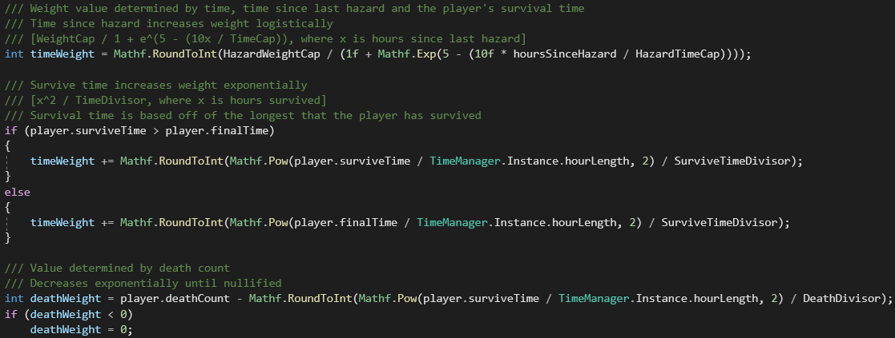The time weight is split into two. The first is a logistic curve, similar to a binary step graph but with more of a gradient. This curve takes into account the time between hazards. As the value resets quite often, due to the important value of 'hoursSinceHazard' being reset for each hazard spawn, I've decided to implement a cap for the weight.
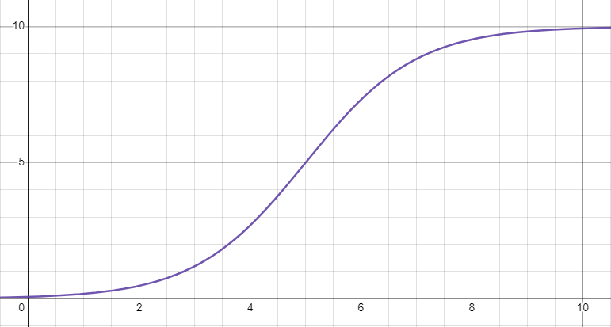The second part of the weight is a simple exponential increase. The longer you survive, the more likely a hazard will be generated. This could either take your current survival time into account, or you longest survived time, depending on which one is longer.
With the time weight alone, even without materials or tools, the chance of hazard spawns would still increase to punish the player if they don't prepare.
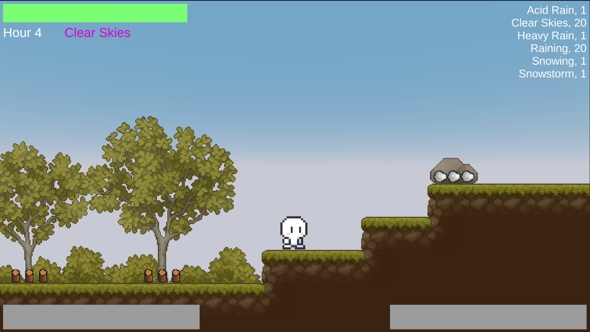Death weight is a decreasing exponential curve. If you've dies a lot, this value will start high. The longer you stay alive however, the less this weight affects hazard generation, until the value nullifies.
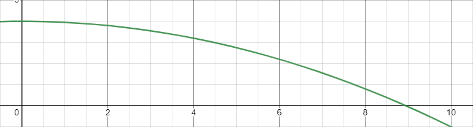full algorithm here
With all chance weighted, a random value is generated to decide which weather is created. The code iterates through the list of weather to see which weather is generated.
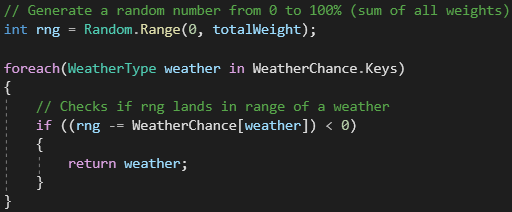The crafting system is simple to understand. Pressing C pops up the crafting menu, showing any tools you may be able to craft currently, based on the materials you have gathered. With wood and rocks in your invetory for example, allows you to make campfire and a shovel. If you're more focused on collecting cotton, you could make a multitude of clothing or covers.
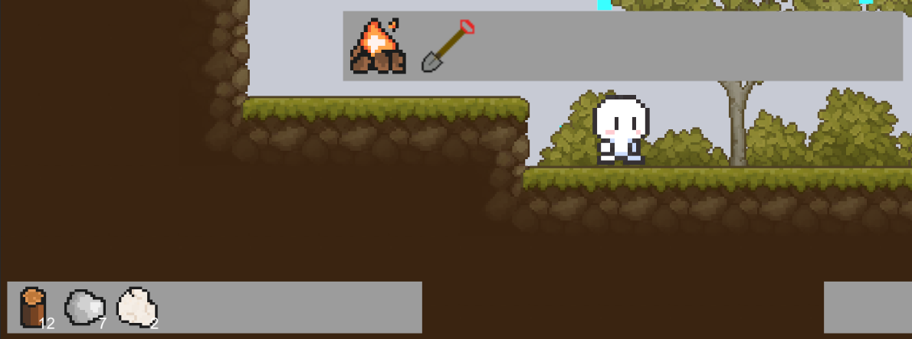 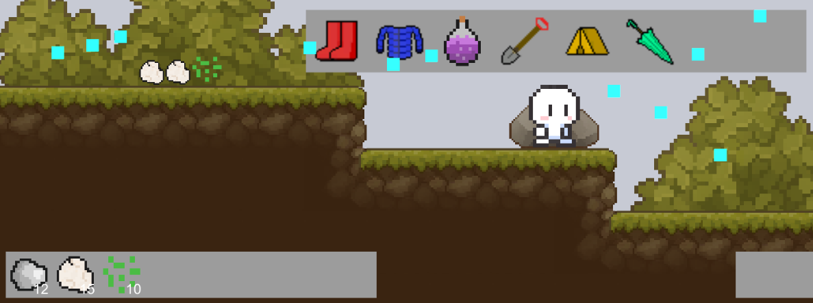The invenotry is a dictionary class, with a key-value pair of the item and the amount of it you have. Collecting and using the item is just a simple case of changing the value of the amount in the array.
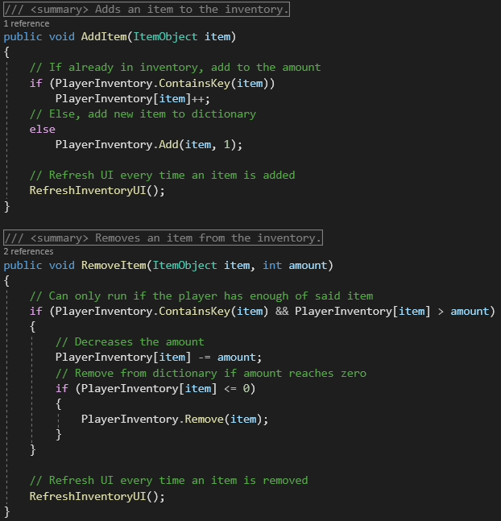Each craftable tool has a number of materials required to craft. The code below checks your inventory for the amount of said material you have to see if you have enough, and only then would the item become available in the menu to craft.
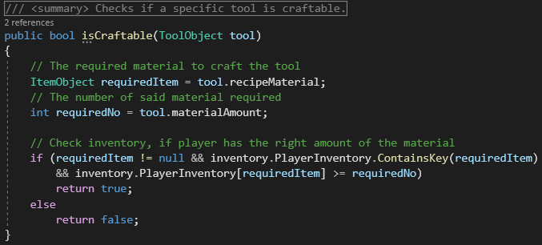 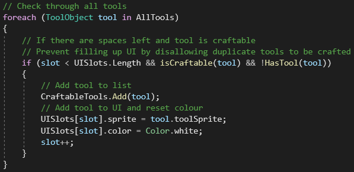